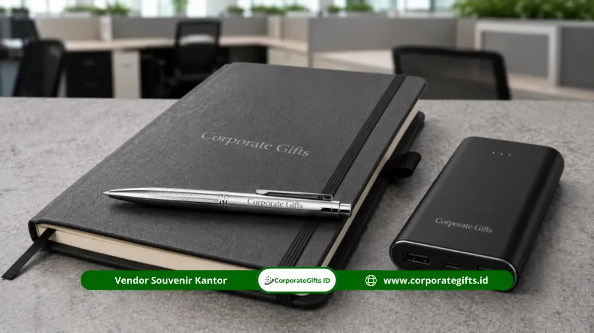

Corporate Gifts ID mencatat bahwa souvenir event instansi pendidikan Jakarta yang paling banyak dipesan adalah notebook, pulpen, tumbler, tote bag, dan seminar kit, karena kelima produk ini langsung mendukung aktivitas peserta selama seminar, workshop, dan kegiatan akademik berlangsung.
Institusi pendidikan di Jakarta, mulai dari universitas terkemuka hingga jaringan sekolah swasta dan negeri, secara rutin menyelenggarakan berbagai agenda berskala besar. Kebutuhan cinderamata edukasi tidak hanya menjadi media apresiasi, melainkan pilar penting dalam memperkuat identitas almamater dan kredibilitas penyelenggara acara.
Poin Kunci Pengadaan Souvenir Pendidikan:
- Karakter Kebutuhan Kampus: Menunjang langsung kegiatan seminar nasional, workshop ilmiah, dan orientasi mahasiswa yang dinamis.
- Varian Produk Terfavorit: Kombinasi fungsional notebook spiral custom, pulpen metal, tumbler stainless, dan tote bag kanvas.
- Segmentasi Jenjang Pendidikan: Sekolah cenderung memilih merchandise praktis dan edukatif, sedangkan perguruan tinggi membutuhkan varian formal hingga teknologi.
- Efisiensi Anggaran: Skema paket seminar kit terpadu memberikan efisiensi biaya pengadaan skala besar untuk ratusan hingga ribuan peserta.
Kebutuhan Souvenir pada Kegiatan Universitas dan Kampus
Universitas dan perguruan tinggi di Jakarta rutin menyelenggarakan berbagai kegiatan akademik yang melibatkan souvenir sebagai bagian dari kelengkapan acara, mulai dari seminar nasional, konferensi internasional, hingga kegiatan badan eksekutif mahasiswa.
Setiap jenis kegiatan memiliki karakter kebutuhan yang sedikit berbeda tergantung pada skala dan audiens yang hadir. Pada seminar kampus reguler, kombinasi produk berikut menjadi pilihan paling umum karena langsung menunjang aktivitas mencatat materi sekaligus praktis dibawa pulang peserta:
Sementara pada konferensi akademik berskala nasional atau simposium internasional, cinderamata yang lebih berkelas seperti executive notebook berkover kulit sintetis, backpack laptop, dan stationery set premium lebih sesuai untuk mencerminkan reputasi institusi penyelenggara.
Adapun kegiatan kemahasiswaan seperti organisasi kampus, pekan ilmiah, atau orientasi mahasiswa baru memiliki sentuhan gaya yang lebih trendi dan kasual, sehingga pilihan produk berikut sangat diminati:
- Tote bag kanvas blacu dengan sablon visual kekinian
- Tumbler minum warna-warni berinsulasi dingin
- Tali Lanyard Printing Custom
- Power Bank Portabel Berlogo
- ID card holder kulit imitasi fungsional
Kebutuhan Souvenir pada Kegiatan Sekolah dan Guru
Sekolah memiliki kebutuhan souvenir yang berbeda dari perguruan tinggi karena audiensnya mencakup siswa, guru dan tenaga pendidik, hingga perwakilan orang tua murid dalam berbagai agenda seperti rapat kerja tahunan dan pelatihan kurikulum.
Pelatihan dan workshop bagi para guru umumnya membutuhkan suvenir yang fungsional untuk menunjang aktivitas belajar-mengajar harian, seperti agenda kerja, bolpoin berpresisi tinggi, dan set stationery seminar.
Sementara pada acara sekolah yang melibatkan murid, seperti wisuda pelepasan, pentas seni tahunan, atau olimpiade sains, produk yang lebih ringkas dan edukatif seperti eco tote bag dan kotak alat tulis menjadi pilihan favorit karena selaras dengan usia siswa.

Distribusi paket seminar kit rapi dengan kemasan custom tote bag memudahkan operasional registrasi peserta acara pendidikan.
Mengelompokkan Souvenir Berdasarkan Jenis Institusi Pendidikan
Setiap jenis lembaga pendidikan, mulai dari universitas riset, sekolah formal, lembaga pelatihan kerja, hingga balai sertifikasi profesi, memiliki ekspektasi acara yang unik:
1. Universitas dan Perguruan Tinggi
Membutuhkan varian suvenir berjangkauan luas, mulai dari acara formal bertaraf internasional seperti wisuda dan dies natalis, hingga suvenir kegiatan mahasiswa yang lebih santai.
2. Sekolah Dasar hingga Menengah
Kebutuhan lebih terkonsentrasi pada pengadaan massal yang ramah anggaran namun memiliki nilai guna tinggi bagi proses belajar mengajar anak didik serta guru pendamping.
3. Lembaga Pelatihan dan Sertifikasi Profesional
Peserta pelatihan umumnya kalangan profesional korporat yang membutuhkan kelengkapan training kit fungsional, seperti folder sertifikat, flashdisk materi, dan tumbler minum personal.
Tabel 20+ Pilihan Souvenir Instansi Pendidikan Berdasarkan Kategori
Sebagai panduan kurasi panitia penyelenggara, berikut rangkuman 22 produk souvenir event instansi pendidikan Jakarta yang paling direkomendasikan:
| No. | Nama Produk Souvenir | Kategori Acara / Target Pengguna |
|---|---|---|
| 1 | Notebook Spiral Hardcover | Seminar Akademik & Perkuliahan |
| 2 | Pulpen Metal Laser Logo | Perlengkapan Catat Peserta |
| 3 | Tumbler Stainless Steel Panas/Dingin | Gaya Hidup & Ramah Lingkungan |
| 4 | Tote Bag Kanvas Printing | Merchandise Kampus & Wadah Kit |
| 5 | Backpack Laptop Ergonomis | Mahasiswa Berprestasi & Konferensi |
| 6 | Tali Lanyard Tissue Lembut | Tanda Pengenal Acara & Panitia |
| 7 | ID Card Holder Kulit Sintetis | ID Card Dosen & Tamu Khusus |
| 8 | Power Bank Slim Fast Charging | Dukungan Mobilitas Gadget |
| 9 | Flashdisk Kartu Custom Foto | Distribusi E-Book & Materi Kuliah |
| 10 | Gadget Pouch Multi-Kompartemen | Organizer Aksesori Belajar |
| 11 | Laptop Sleeve Busa Pelindung | Proteksi Laptop Mahasiswa & Guru |
| 12 | Mouse Pad Presisi Logo Almamater | Perlengkapan Lab Komputer & Meja |
| 13 | Desk Organizer Multifungsi | Kerapian Meja Dosen dan Tenaga Kerja |
| 14 | Kalender Meja Custom Akademik | Pengingat Jadwal Semester & Kantor |
| 15 | Sticky Notes Pad Penanda Buku | Alat Pendukung Riset & Perpustakaan |
| 16 | Executive Pen Set Kotak Beludru | Cinderamata Pemateri & Keynote Speaker |
| 17 | Gift Set Plakat & Tumbler VIP | Apresiasi Kemitraan Antar Lembaga |
| 18 | Paket Seminar Kit Standar | Seminar Harian & Kuliah Umum |
| 19 | Conference Kit Eksklusif | Konferensi Internasional & Kongres |
| 20 | Stationery Set Siswa Lengkap | Perlengkapan Workshop Sekolah |
| 21 | Tumbler Set Gift Box Pita | Hadiah Dies Natalis & Donor Kampus |
| 22 | Eco Bag Lipat Ramah Lingkungan | Event Kampanye Hijau Sekolah |
Kesimpulan: Memilih Merchandise Tepat untuk Lembaga Pendidikan
Kebutuhan souvenir event instansi pendidikan Jakarta sangat kaya ragam, mulai dari agenda santai tingkat fakultas hingga simposium keilmuan bereputasi global. Menentukan cenderamata yang tepat bukan sekadar mencocokkan logo dengan produk, namun memastikan setiap barang memberikan faedah nyata bagi kegiatan akademis peserta.
Dengan perencanaan cermat dan pemilihan vendor bereputasi tinggi, suvenir acara akan menjelma menjadi media representasi keunggulan institusi Anda yang bertahan lama di meja kerja peserta.
Pertanyaan Seputar Souvenir Event Instansi Pendidikan Jakarta (FAQ)

Ditulis oleh: Arinda Zakia
Senior Corporate Gifting SpecialistSpesialis kurasi suvenir korporat, paket seminar kit edukasi, dan merchandise institusi dengan pengalaman lebih dari 7 tahun mendampingi ratusan kampus dan sekolah di Indonesia.
Lihat Profil Lengkap & Panduan Lainnya